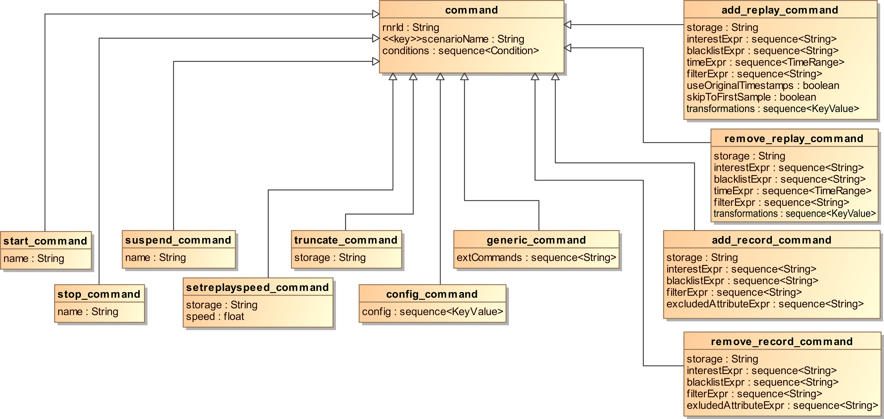
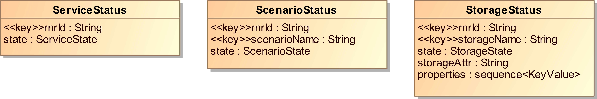
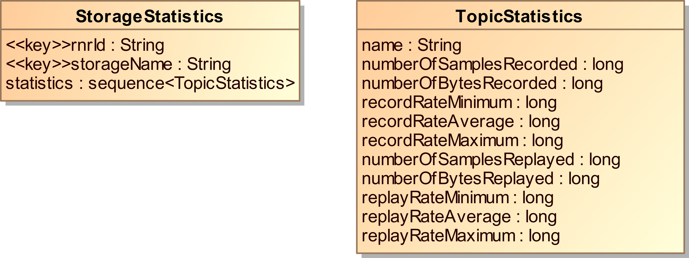
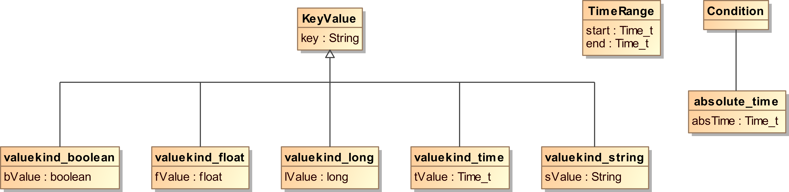

4. Topic API Overview¶
The RnR Service can be controlled and monitored using a DDS topic API. All topics are in a separate DDS partition called RecordAndReplay.
4.1. Record & Replay topics¶
| Name | Type | Purpose |
|---|---|---|
| rr_scenario | RnR::Command | Controlling the Record and Replay service |
| rr_scenario_v2 | RnR_V2::Command | Controlling the Record and Replay service (version 2) |
| rr_scenarioStatus | RnR::ScenarioStatus | Monitoring status of scenarios |
| rr_serviceStatus | RnR::ServiceStatus | Monitoring status of services |
| rr_storageStatus | RnR::StorageStatus | Monitoring status of storages |
| rr_storageStatistics | RnR::StorageStatistics | Monitoring data-characteristics of storages |
4.2. Relevant QoS settings¶
The following table shows the topic QoS parameters that deviate from the default DDS topic QoS, for the topics used by the Record and Replay Service.
| Policy | Scenario Topic | Status + Statistics Topics |
|---|---|---|
| DurabilityQosPolicy | PERSISTENT | TRANSIENT |
| DurabilityServiceQosPolicy => HistoryQosPolicy | KEEP_ALL | KEEP_LAST (with DEPTH=1) |
| ReliabilityQosPolicy | RELIABLE | RELIABLE |
| HistoryQosPolicy | KEEP_ALL | KEEP_LAST (with DEPTH=1) |
This enables readers and writers to use the copy_from_topic_qos() operations or the USE_TOPIC_QOS convenience macro to create a reader or writer that is compatible with the topics created by the service. Furthermore the status topic writers use a KEEP_ALL history QoS so readers can get a full overview of all status updates instead of only the last state. The scenario readers are created with a VOLATILE durability so they are also able to read samples produced by a VOLATILE writer in addition to TRANSIENT and PERSISTENT writers.
The corresponding IDL code can be found in the RnR Topic API specification.

- Note that the IDL and diagrams in this section describe the full API. The other sections of this manual describe only the features that have been implemented in the current release of the RnR Service, and omit all members that will be implemented in future releases.
4.3. Command Type¶
Command Topic
{kind=link}
The command type, used by the rr_scenario and rr_scenario_v2 topics, contains a union that allows the command kind to be set. Depending on the command kind, certain members are available that apply only to a specific type of command.
The following command kinds can be set when creating a command:
- START_SCENARIO_COMMAND
- Start a scenario (or continue a paused scenario).
- STOP_SCENARIO_COMMAND
- Stop a running scenario.
- SUSPEND_SCENARIO_COMMAND
- Suspend processing of new commands in a running scenario.
- CONFIG_COMMAND
- Modify the runtime configuration of a RnR service.
- SETREPLAYSPEED_COMMAND
- Change the replay-speed of a storage.
- TRUNCATE_COMMAND
- Remove data from a storage.
- ADD_RECORD_COMMAND
- Specify interest to record data to a storage.
- REMOVE_RECORD_COMMAND
- Remove record-interest from a storage.
- ADD_REPLAY_COMMAND
- Specify interest to replay data from a storage.
- REMOVE_REPLAY_COMMAND
- Remove replay-interest from a storage.
There are a number of common properties that are shared by all commands:
- rnrId
- The rnrId is used to address the command to a specific RnR service. It should match the name attribute of the service tag in the OpenSplice configuration. The middleware uses this identifier to resolve the configuration options that apply to the service. A RnR service only accepts commands with an rnrId that matches its service-name. An asterisk * can be used as rnrId for commands targeted at all available RnR services in a domain.
- scenarioName
- The scenarioName is the key of the scenario topic. It is used to uniquely identify a specific scenario instance of which all samples (commands) together make up the scenario. For more information about scenarios, please see the section on Scenarios.
- conditions
Optionally one or more conditions can be attached to a command. The command is only processed when all conditions are met.
Currently only one kind of condition is supported: the
time-stamp condition. Future extensions will add other kinds
of conditions which is the reason why the API supports attaching
multiple conditions to a command.
4.3.1. Control commands¶
Some kinds of commands are used to control the running state of a scenario: the start, stop and suspend commands.
These all have a single member.
- name
The name of the target scenario to control.
 Do not confuse this with scenarioName, which is the name
of the scenario that will process the command.
Do not confuse this with scenarioName, which is the name
of the scenario that will process the command.- START_SCENARIO_COMMAND
- Instructs the service to start processing scenario name. The service will publish a status update that changes the state of the scenario to RUNNING. If the target scenario is already known to the service, and is in the suspended state, a start command causes the scenario to resume processing commands, changing the scenario status from PAUSED to RUNNING.
- SUSPEND_SCENARIO_COMMAND
- Suspends the processing of commands by the scenario. This allows applications to submit a number of commands to a scenario, without any immediate effects. When the scenario is resumed all new commands are processed as if they were published in a batch while in reality they may have been published with varying intervals.
- STOP_SCENARIO_COMMAND
- Stops the execution of a scenario, including any recording and/or replaying that was defined as part of that scenario.
- It is important to understand that a scenario, once stopped, cannot be started again. However, it is possible to start a new scenario with the same name as the stopped scenario. If any commands of the original scenario were published as transient data they will be delivered to and processed by the new scenario, giving the impression that the scenario has been re-started.
4.3.2. Config command¶
Config commands are used to modify the runtime configuration of a RnR service.
- config
- A sequence of KeyValue objects.
A config command can be used to add a storage to the service or modify properties of an existing storage. Storages can also be configured in the OpenSplice configuration file, but config commands provide the opportunity to create and configure storages dynamically.
A single config command can apply to multiple storages, if the config sequence consists of multiple elements. The key of the KeyValue object should always be Storage.
- Currently, only storages can be manipulated by config commands but future versions may enable config commands to modify other aspects of the service, using different keys.
The value for Storage configuration data is a string describing the storage in XML notation. The format of this XML string is identical to the XML used in the configuration file (created by the OpenSplice configuration tool).
An example:
command {
scenarioName = “MyScenario”,
rnrId = “MyService”,
conditions = NULL,
kind = CONFIG_COMMAND,
config[0].keyval = “Storage”,
config[0].sValue = “<Storage name='MyStorage'>
<rr_storageAttrXML>
<filename>my-storage.dat</filename>
</rr_storageAttrXML>
<Statistics enabled=”true” publish_interval=”30”/>
</Storage>”
};
When a config command is issued for an existing storage, the storage properties are modified accordingly.
- Note that storage attributes can only be changed when a storage is unused: it cannot be in the OPEN state (see Storage Status). Properties related to statistics can be modified while the storage is in use.
4.3.3. ADD_RECORD_COMMAND¶
This command is used to add interest to record certain DDS data.
Mandatory properties:
- storage
The name of the storage in which the data has to be stored. If the storage cannot be resolved the command is ignored.
Available storages can be determined by subscribing to the StorageStatus topic.
- interestExpr
- A sequence of strings that describe the record interest. Each expression is a partition-topic combination where the partition- and topic-expression are separated by a period (‘.’). Wildcards are supported: ‘?’ to match a single character and ‘*’ to match any number of characters. If expressions overlap, even if only partially, data will only be recorded once.
4.3.4. REMOVE_RECORD_COMMAND¶
This command mirrors the add record command and is used to remove record interest from a storage.
Mandatory properties:
- storage
- The name of the storage of which record-interest is removed.
- interestExpr
The interest expressions describing the record interest to remove.
Note that these interest expressions need to match those used
previously in an add record command.
4.3.5. ADD_REPLAY_COMMAND¶
This command is similar to a record command but adds interest to replay data to the Record and Replay service.
Mandatory properties:
- storage
The name of the storage from which the data will be replayed. If the storage cannot be resolved the command is ignored.
Available storages can be determined by subscribing to the StorageStatus topic.
- interestExpr
- A sequence of strings that describe the replay interest. Each expression is a partition-topic combination where the partition- and topic-expression are separated by a period (‘.’). Wildcards are supported: ‘?’ to match a single character and ‘*’ to match any number of characters. If expressions overlap, even if only partially, data will only be recorded once.
Optional properties:
- timeExpr
- A sequence of time-ranges that are used in combination with the interest expressions to select a subset of data available in a storage for replay. Each time-range in the sequence is applied to each interest expression. A sample read from a storage is only replayed if its partition and topic can be matched against the interest expressions and its record-time can be matched against the time-range expressions. The time-range expressions are optional; when they are omitted a sample is replayed when an interest expression matches. For more information about time-ranges, see the description of the TimeRange type.
- useOriginalTimestamps
- By default this value is true. When a sample is recorded, its original write and allocation timestamps are preserved. When this sample is replayed, it will be delivered to readers with these original timestamps. Depending on resource limits and QoS settings, readers may discard the replayed data if data with more recent timestamps is available. By setting useOriginalTimestamps to false, the timestamps will be updated with the current time upon replay.
- skipToFirstSample
- By default this value is false. When a sample matches interest expressions but doesn’t match any of the supplied time-ranges, the Record and Replay service tries to mimic original timing behaviour by sleeping until the next sample is evaluated based on record timestamps. Sometimes this is not the required behavior and the service should simply skip all non-matching samples and start replaying immediately the first sample that matches an interest expression and time-range. This behaviour can be enabled by setting skipToFirstSample to true.
- The following property is only available in version 2 of the RnR scenario topic.
- transformations
A sequence of transformations, applied to each sample upon replay. By default, no transformations are applied. Note that samples first have to match interest-expression and time-range before any transformations are evaluated. The transformations sequence consists of KeyValue elements. A specific type of transformation is selected by choosing a specific key. Multiple transformations of the same kind can be used in the same sequence. The value is a string describing the new value. The transformation can be applied conditionally by using a ‘:’ (colon) character to separate original and replacement values in the value-string. Note that the original value needs to be an exact match, wildcards or expressions are not supported. The supported transformations types are listed in the table.
Key Description partition Partition in which the sample is replayed deadline_period Deadline QoS policy latency_period Latency budget QoS policy ownership_strength Ownership strength QoS policy (applies only to samples written with exclusive ownership-kind QoS policy) transport_priority Transport priority QoS policy lifespan_period Lifespan QoS policy Transformations that involve a period can be expressed in either DDS-compliant duration (sec.nanosec) or more human-friendly floating-point (sec.millis) formats. Floating-point values are interpreted locale-independent, using a period ‘.’ (decimal point) character. Partition transformations are supported for partition names consisting of alphanumeric and special characters ‘-’, ‘/’ and ‘_’.
4.3.6. REMOVE_REPLAY_COMMAND¶
This command mirrors the ADD_REPLAY_COMMAND, except for the properties useOriginalTimestamps and skipToFirstSample, which change the replay behaviour and are not applicable to the remove replay command.
The command is used to remove replay interest from a storage. Mandatory members of the add replay command are also mandatory in the remove replay command.
Mandatory properties:
- storage
- The name of the storage which replay-interest is removed from.
- interestExpr
The interest expressions describing the replay interest to remove.
Note that these interest expressions need to match those used
previously in an add replay command.
Optional properties:
- timeExpr
- The sequence of time ranges to remove. Similar to the add replay command. If this parameter is specified, only the interest that exactly matches the time ranges is removed. As a shortcut, if the time range sequence is empty, any interest that matches the interest expressions in the remove replay command is removed regardless of the time ranges attached to that interest.
- The following property is only available in version 2 of the RnR scenario topic.
- transformations
- A sequence of transformations to remove. If any replay interest is to be removed completely, this sequence should match exactly the sequence included in add replay command(s) responsible for adding the interest. For more details about the contents of the KeyValue sequence elements, please see the ADD_REPLAY_COMMAND.
4.3.7. TRUNCATE_COMMAND¶
This command can be used to clear a storage. When recording samples to an existing storage, by defauilt the data is appended. If instead the required behaviour is to overwrite the storage, the truncate command can be used to remove the data recorded to the storage during previous sessions.
- Note that the truncate command can only be executed if the storage isn’t busy recording and/or replaying data. Thus is may be required to first publish remove record/replay commands, in order to remove all interest from a storage so that it gets closed by the RnR service, before the truncate command can be succesfully processed. The StorageStatus topic should be monitored to determine if this is the case.
4.3.8. SETREPLAYSPEED_COMMAND¶
Using this command the replay speed of a storage can be manipulated. The replay speed affects the delay between replayed samples. For example, a replay speed of 2 will cut the delay in half: samples will be replayed twice as fast as originally recorded.
Mandatory properties:
- storage
- The name of the storage of which to change the replay speed. If the storage cannot be resolved the command is ignored.
- speed
A floating-point value containing the new replay-speed. The following values have a special meaning:
-1: Maximum speed; delays between samples are skipped and the samples from the storage are inserted into DDS as fast as possible.
1 : Replay samples with the same timing characteristics as when originally recorded.
0 : Pause the storage; no samples are replayed until the speed is increased.
The default replay speed is 1 (samples are replayed with the same timing characteristics as when originally recorded).
4.4. Status Types¶
To monitor the status of various components of the service, applications can take a subscription on the status topics published by the Record and Replay service.
Status Topics
{kind=link}
Status topics are state-based, meaning that they are only published when a state changes. Readers normally only need to read the latest sample of an instance to get the latest (current) state. However, a reader can also be created with a KEEP_ALL history if it needs to be aware of all states even when state changes occur in quick succession.
4.4.1. Service Status¶
Each Record and Replay service publishes its own state in the rr_serviceStatus topic. The topic uses the ServiceStatus type, which has the following members:
- rnrId
- The name identifying the service. This is also the key of the topic. The rnrId can be used to identify the service responsible for publishing the status update.
- state
The current state of the service. The following states are possible:
INITIALISING: The service is started and initialising, but not yet able to process commands. During initialization the service processes configuration parameters and joins the DDS domain.
OPERATIONAL: The service is successfully initialized and ready to accept commands.
TERMINATING: The service is shutting down.
TERMINATED: The service is detached from the DDS domain and stopped.
The service status topic reflects the life-cycle of a Record and Replay service. It is published when the state field changes, which normally occurs only during service startup or shutdown (i.e. when OpenSplice is started or stopped).
4.4.2. Scenario Status¶
The service publishes the state of each known scenario in the rr_scenarioStatus topic. This topic, using the ScenarioStatus type, contains the following members:
- rnrId
- The name identifying the service.
- scenarioName
- The name identifying a scenario.
The scenarioName combined with the rnrId define an instance of the scenario status topic, so each update can be related to the service and scenario responsible for that status.
- state
The current state of the scenario. The following states are possible:
RUNNING: The scenario is running and actively processing commands.
SUSPENDED: A scenario enters the suspended state after a suspend-scenario command is processed for the scenario. While suspended, the scenario doesn’t process any new commands.
STOPPED: The scenario was stopped and removed from the service.
- Note that, until a scenario is started, a service is unaware of its existence. There may be commands belonging to the scenario, maintained by OpenSplice (in persistent or transient stores), but a scenario status isn’t published until the state of a scenario within a service is changed to RUNNING by issuing a start-scenario command for that scenario to a specific service.
4.4.3. Storage Status¶
The service publishes the state of each known storage in the rr_storageStatus topic. This topic, using the StorageStatus type, contains the following members:
- rnrId
- The name identifying the service. This is a key of the topic.
- storageName
- The name identifying a storage.
The storageName combined with the rnrId define an instance of the storage status topic and can be used to relate an update of the topic to the service and storage responsible.
- state
The current state of the storage. A storage may have the following states:
READY: This is the initial state after configuring a storage, when the configuration is deemed valid. It means the storage was defined and available when configured. In the case of a pre-existing storage, properties are available in the status update for this state.
OPEN: The storage is in use by one or more scenarios identified by the scenarioNames sequence in the status update for this state.
ERROR: The storage is invalid and cannot be used. This can either mean an error in the storage configuration or an issue related to resources claimed by the storage. Most notably in case of an XMLstorage, the service may not have permission to open a file that is part of the storage.
Note that it is not currently possible to determine the reason for
an ERROR state directly from the status update, but a descriptive
message is written to the OpenSplice log files. A future release will
make this message available in the status update.OUTOFRESOURCES: When a storage is used for recording, it may run out of resources.
CLOSED: A storage may enter the closed state for two reasons. Usually it is closed when all record and/or replay interest has been detached from the storage. This occurs when all scenarios that were using the storage are stopped. If the storage is used for replay, it may also be closed when all data in the storage has been evaluated and the end of the storage was reached.
- storageAttr
- The XML string describing the attributes currently used by the storage. This is identical to the attributes section of a storage configuration.
- properties
Properties of the data contained in a storage. The following properties are available per recorded topic:
- Partition and topic names
- Number of samples and number of bytes
- Record timestamps of the first and last occurrence
- Average data rate
 Note that properties are not updated while a storage is open, they are
only updated when the state of a storage changes.
Note that properties are not updated while a storage is open, they are
only updated when the state of a storage changes.
Unlike the other status topics, the storage status is determined by more than just the state field. The attributes and sequence of scenario names are also part of the state. Therefore storage status updates not only occur when the state field itself is changed but also when the attributes are changed or when a scenario starts (or stops) using the storage.
4.5. Storage Statistics¶
The Record and Replay service can optionally maintain runtime statistics regarding the data that is recorded to and/or replayed from a storage. These statistics can be published in the rr_storageStatistics topic.
Storage Statistics Topic
{kind=link}
Statistics are enabled per storage. Publication in the rr_storageStatistics topic is optional and can be managed by the publish_interval attribute of the statistics configuration element.
- Publish_interval
- This is the number of seconds between each publication of the statistics from a specific storage. The value -1 has a special meaning: if set, the statistics will only be published when the storage is closed. Setting the publish_interval to 0 will also prevent the publication of statistics. Note that a config command can be issued to change the publication interval on the fly.
The statistics values can be reset by setting the reset attribute in the XML configuration string of the storage statistics.
4.6. Miscellaneous Types¶
The API contains a number of utility types used as members in one or more topics. These helper types are described in this section.
Miscellaneous Types
{kind=link}
4.6.1. KeyValue¶
The KeyValue type is a generic key:value container. It is used for the transformations sequence in add and remove replay commands and as the config sequence of a config command, to send configuration values to a Record and Replay service and/or scenario.
- key
- A string that selects a specific configuration value to add or update.
Depending on the KeyValue kind, a value can take on a number of representations: boolean, string, long or float.
4.6.2. TimeRange¶
The TimeRange type can be used to limit the selection of data in a replay command. Interest expressions select data based on partition and topic names, time-ranges filter this selection based on record timestamps.
The DDS::Time_t type is used to express a timestamp. A range is defined by a start and an end timestamp.
- start
- The start timestamp of the range. When TIME_INVALID_SEC and TIME_INVALID_NSEC are specified, the start time is considered to be -infinity. This means that any sample recorded before the end timestamp is matched.
- end
- The end timestamp of the range. When TIME_INVALID_SEC and TIME_INVALID_NSEC are specified, the end time is considered to be +infinity. This means that any sample recorded after the start timestamp is matched.

Table Of Contents
- 4. Topic API Overview